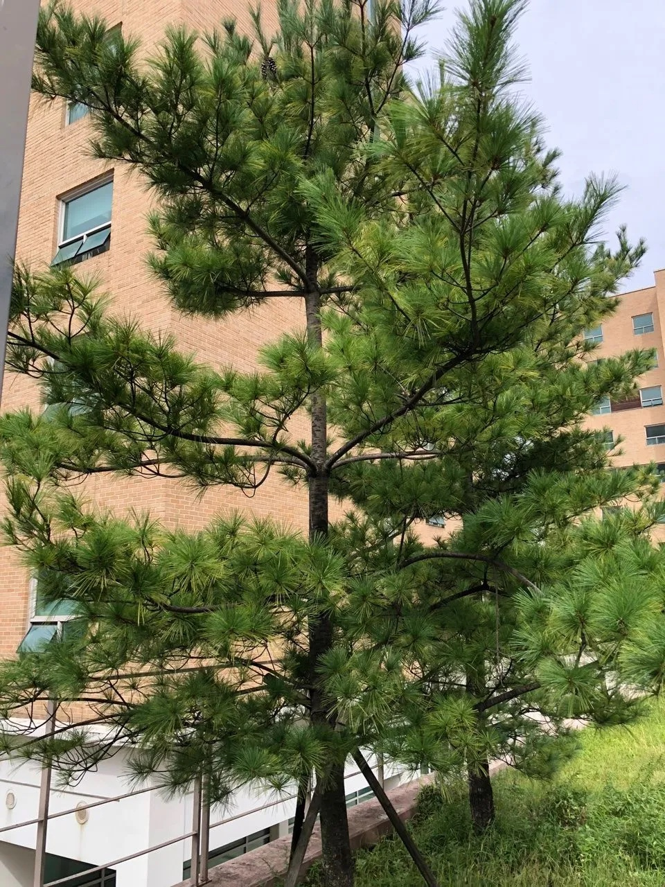

Gallery

Details
- 분류: 소나무과 소나무속의 상록침엽교목
- 꽃말: 정보 없음
- 학명: Pinus strobus L.
- 꽃: 4월 하순에 황녹색의 꽃이 피며, 암수한그루입니다. 수꽃은 원관형, 암꽃은 장타원형입니다.
- 잎/줄기:
- 잎: 청녹색을 띠는 바늘 모양의 잎이 5개씩 모여 달리며, 길이는 약 15cm까지 자랍니다. 뒷면에 백색 기공선이 있습니다.
- 줄기: 줄기는 곧고 통직하며, 수피는 녹갈색으로 처음에는 밋밋하지만 나무가 자라면서 세로로 깊이 갈라집니다.
- 열매: 이듬해 10월 상순에 길이 10~12cm 정도의 원통형 구과(솔방울)가 아래를 향해 달립니다. 솔방울 내부에는 날개가 달린 작은 씨앗이 들어있습니다.
Location
서울대학교